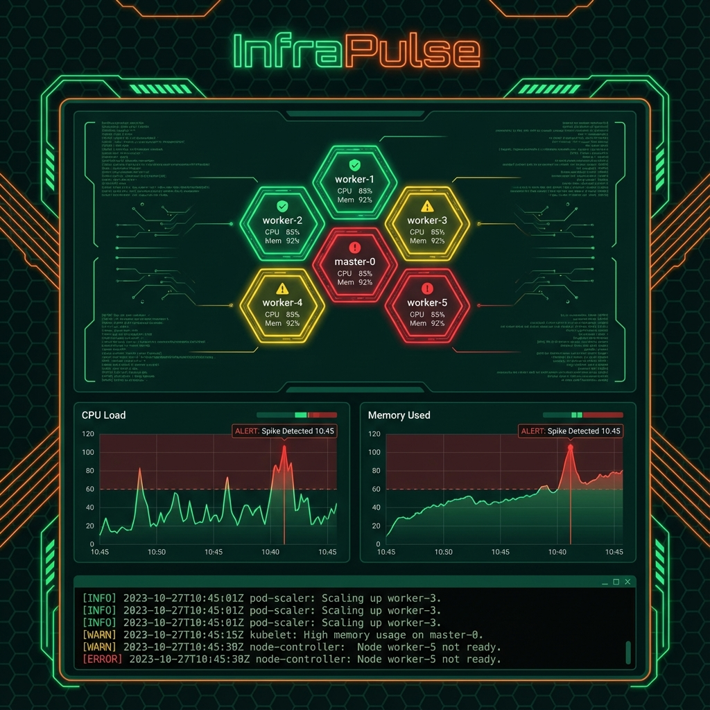

InfraPulse
Predictive Operations & Kubernetes Health Analytics

Overview
InfraPulse is an AIOps dashboard that provides real-time visibility into Kubernetes clusters. Going beyond simple monitoring, it uses time-series forecasting to predict node failures and resource exhaustion 30 minutes before they happen, triggering automated scaling policies.
🧠 Predictive Failure Analysis
LSTM-based machine learning models analyze CPU/Memory usage trends to forecast anomalies, reducing unplanned downtime by proactive alerting.
🕸️ Real-Time Cluster Visualization
A hexagonal visualization map of the entire cluster state, dynamically updating as pods spin up or down, powered by D3.js and WebSockets.
🤖 Auto-Remediation Scripts
Configurable rules engine that can automatically restart stuck pods, clear caches, or scale node pools when specific distress signals are detected.
🔄 Event-Driven Architecture
Built on Apache Kafka to ingest millions of log lines per minute from distributed agents without bottlenecking the main dashboard performance.
Technical Challenges & Solutions
Challenge: Metrics Overload
Solution: Storing raw metrics for weeks was cost-prohibitive. Implemented a "downsampling rollup" strategy in the time-series database to retain high precision for the last 24 hours and aggregated averages for long-term storage.
Challenge: Agent Overhead
Solution: The monitoring sidecar agent was rewritten in Rust to ensure a memory footprint under 50MB, ensuring the monitoring tool didn't become the resource hog itself.